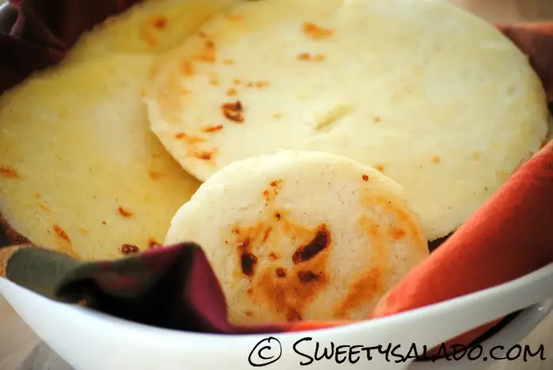

Arepa Colombiana

Description
La arepa es digamos un tipo de tortilla hecha a base de maíz. Las tribus indígenas que habitaban lo que hoy forman Colombia y Venezuela fueron los creadores de este producto, el cual hasta el día de hoy es una parte integral de nuestra gastronomía. Claro que en ese entonces tenían que pelar la mazorca, cocinar el maíz, molerlo, armar las arepas y luego cocinarlas. Es más, yo tuve la dicha de ver a mi mamá y a mi tía abuela levantarse a las 5 de la mañana todos los días para hacer las arepas del día. Claro que me imagino que para ellas no era tan dichoso levantarse tan temprano para hacer un montón de arepas. Afortunadamente, hoy en día esta harina ya la venden lista para amasar, viene no solo molida, sino también pre-cocida. ¿Qué más fácil que eso?
Ingredients
- Agua: Siempre es mejor usar agua tibia para que se disuelva la harina con más facilidad.
- Sal: Es clave para darle un buen sabor a la masa.
- Harina de maíz precocida: Cualquier marca funciona para hacer esta receta. Utiliza la que puedas encontrar en el supermercado.
- Mantequilla: Este ingrediente le aporta un sabor delicioso y ayuda a que la masa quede suave.
- Queso: Me encanta usar el queso mozzarella para esta receta, pero puedes utilizar todo tipo de queso para realzar o cambiar el sabor.
Steps
- Mezcla todos los ingredientes en un recipiente grande y amasa hasta que la masa quede bien suave. Si notas que está quedando seca, le puedes agregar más agua. Y si está muy húmeda, le puedes agregar más harina.
-
Arma las arepas como más te gusten. Delgadas, gruesas, pequeñas, grandes, redondas, como quieras. Este paso no tiene ciencia.
- Asa las arepas sobre una parrilla caliente o una sartén con un poquito de mantequilla, como prefieras. La clave está en dorarlas a una temperatura medio-alta para que doren. Recuerda que la masa ya viene precocida y no las estás asando para cocinarlas, sino para que darles un color dorado.